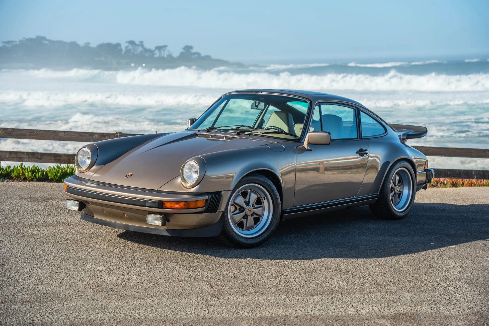

The Porsche 911 is the cornerstone of Porsche it has been around for the longest of all of Porsches current cars and has remained pretty similar to its first model
The Porsche 911 Featured in the picture is equipped with a 2.6l Flat 6 engine and is rear wheel drive
back to front page